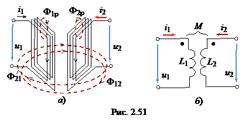
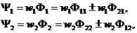

Индуктивная связь катушек обуславливается связью их магнитных потоков. Взаимно индуктивная связь проявляется в наведении ЭДС (называемой ЭДС взаимоиндукции) в данной катушке при изменении тока, протекающего в другой, близко расположенной катушке. Цепи, в которых наводятся ЭДС взаимоиндукции, называют индуктивно связанными цепями.
Рассмотрим явление взаимоиндукции на примере двух катушек, по которым протекают синусоидальные токи i1 и i2 (рис. 2.51а). Условное обозначение двух индуктивно связанных катушек показано на рис. 2.51б.

Ток i1 создаёт два магнитных потока:
• Ф12 взаимосвязи катушки 1 с катушкой 2; он пронизывает обе катушки;
• поток Ф1р − поток рассеяния первой катушки,
который замыкается вокруг витков w1 первой катушки.
Общий магнитный поток самоиндукции первой катушки, созданный током i1, Ф11 = Ф12 + Ф1р. По аналогии для второй катушки с током i2, Ф22 = Ф21+ Ф2р. Заметим, что потоки Ф1р и Ф2р не пересекают витки соседних катушек и не участвуют в магнитной связи катушек.
Суммарный магнитный поток в каждой катушке
(2.87)
где Ф21 и Ф12 − потоки взаимоиндукции двух катушек.
Потоки Ф21 и Ф12 в (2.87) берутся со знаком "плюс" при согласном включени и катушек, при котором потоки в катушках, созданные собственными токами и токами соседних катушек, совпадают по
направлению, и со знаком "минус" − при встречном включении катушек, при котором, например, собственный магнитный поток Ф11 первой катушки ослабляется потоком Ф21 соседней катушки. Направления этих потоков противоположны.
Умножив первое уравнение (2.87) на число витков w1 первой катушки, а второе − на w2 второй катушки, получим уравнения потокосцеплений катушек 1 и 2:
 (2.88)
где Ψ21 = w1Ф и Ψ12 = w2Ф12 − потокосцепления взаимоиндукции.
В индуктивных катушках без ферромагнитных сердечников магнитные потоки и потокосцепления самоиндукции и взаимоиндукции пропорциональны вызвавшим их токам, т.е.
(2.89)
(2.90)
где М − взаимная индуктивность индуктивно связанных катушек.
Численно величина М равна отношению потокосцепления взаимной индукции к значению вызвавшего его тока. Взаимную индуктивность М выражают в генри (Гн).